ЦЕНТРАЛЬНЫЙ РЕМЕНЬ БЕЗОПАСНОСТИ ЗАДНЕГО СИДЕНЬЯ В СБОРЕ (выдвижное сиденье раздельного типа 60/40 с функцией облегчения посадки "Walk-in" с левой стороны) > СНЯТИЕ |
| 1. СНИМИТЕ ЛЕВОЕ ЗАДНЕЕ СИДЕНЬЕ № 1 В СБОРЕ |
Снимите левое заднее сиденье № 1 в сборе (Нажмите здесь).
| 2. СНИМИТЕ ВЕРХНЮЮ ОТКИДНУЮ КРЫШКУ ЛЕВОГО ЗАДНЕГО СИДЕНЬЯ |
| 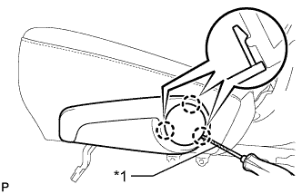 |
С помощью отвертки освободите 3 захвата и снимите наладку.
| *1 | Защитная клейкая лента |
| 3. СНИМИТЕ РУЧКУ ОТПУСКАНИЯ РЕГУЛЯТОРА НАКЛОНА ЛЕВОГО СИДЕНЬЯ |
| 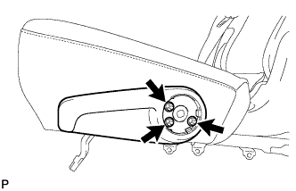 |
Выверните 3 болта и снимите рукоятку.
| 4. СНИМИТЕ ПРАВУЮ КРЫШКУ ПЕТЛИ ЦЕНТРАЛЬНОГО СИДЕНЬЯ |
| 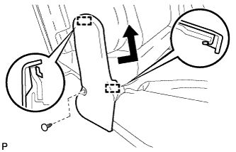 |
С помощью съемника фиксаторов освободите фиксатор.
Освободите 2 направляющих и снимите крышку.
| 5. СНИМИТЕ МОЛДИНГ ПОДУШКИ ЛЕВОГО ЗАДНЕГО СИДЕНЬЯ |
| 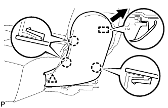 |
С помощью съемника фиксаторов расцепите фиксатор.
С помощью съемника молдингов расцепите 3 захвата.
Переместите молдинг в направлении, указанном на рисунке стрелкой, чтобы отсоединить направляющую, и снимите молдинг.
| 6. СНИМИТЕ КРЫШКУ ЗАЩЕЛКИ ЗАМКА СПИНКИ ЛЕВОГО ЗАДНЕГО СИДЕНЬЯ |
| 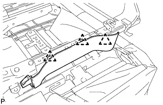 |
С помощью съемника фиксаторов освободите 3 фиксаторов и снимите щиток.
| 7. СНИМИТЕ ОБИВКУ ПОДУШКИ СИДЕНЬЯ ВМЕСТЕ С ПОДУШКОЙ |
| 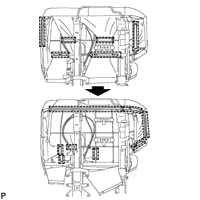 |
Отсоедините крепления.
| 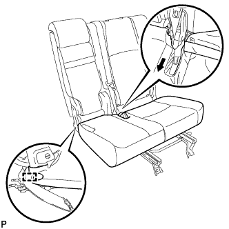 |
Освободите крепление и снимите обивку подушки сиденья вместе с подушкой.
| 8. СНИМИТЕ СПИНКУ ЦЕНТРАЛЬНОГО СИДЕНЬЯ В СБОРЕ |
| 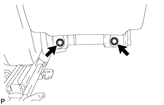 |
Выверните 2 болта и снимите спинку центрального сиденья.
| 9. СНИМИТЕ ЗАМОК РЕМНЯ БЕЗОПАСНОСТИ ЛЕВОГО ЗАДНЕГО СИДЕНЬЯ № 1 В СБОРЕ |
| 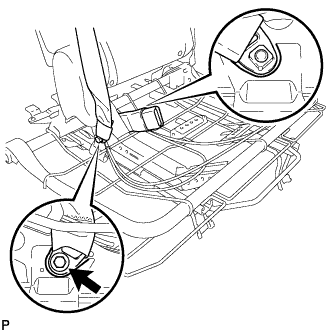 |
Выверните болт, снимите замок ремня безопасности и отсоедините крепление 3-точечного ремня безопасности.
| 10. СНИМИТЕ КОЛПАЧОК ЛЕВОЙ РУЧКИ РЕГУЛЯТОРА НАКЛОНА |
| 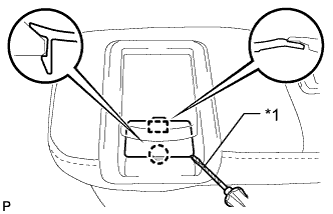 |
С помощью отвертки расцепите захват и направляющую и снимите крышку.
| *1 | Защитная клейкая лента |
| 11. СНИМИТЕ РЫЧАГ ЗАМКА ЛЕВОГО ЗАДНЕГО СИДЕНЬЯ В СБОРЕ |
| 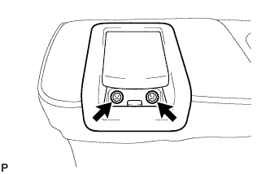 |
Выверните 2 винта.
| 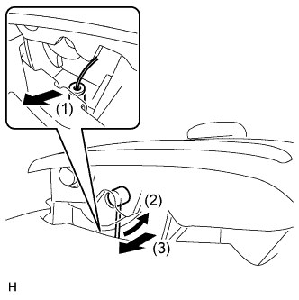 |
Отсоедините трос в порядке, показанном на рисунке, и снимите рычаг.
| 12. СНИМИТЕ КРЫШКУ КРЕПЛЕНИЯ РЕМНЯ БЕЗОПАСНОСТИ |
| 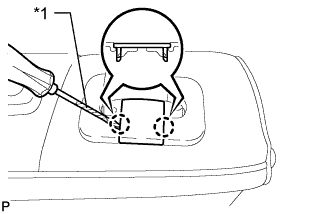 |
С помощью отвертки освободите 2 захвата и снимите колпачок.
| *1 | Защитная клейкая лента |
| 13. СНИМИТЕ КРЫШКУ ПЛЕЧЕВОГО КРЕПЛЕНИЯ РЕМНЯ ЗАДНЕГО СИДЕНЬЯ |
Отсоедините ремень безопасности от крышки.
| 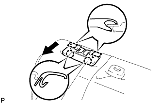 |
Освободите 2 захвата и 2 направляющие, а затем снимите щиток.
| 14. СНИМИТЕ ОБИВКУ СПИНКИ ЗАДНЕГО СИДЕНЬЯ |
 |
С помощью отвертки освободите 4 захвата и снимите обивку.
| 15. СНИМИТЕ ПАНЕЛЬ ПОКРЫТИЯ СПИНКИ ЛЕВОГО ЗАДНЕГО СИДЕНЬЯ В СБОРЕ |
| 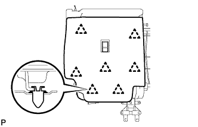 |
С помощью съемника фиксаторов расцепите 7 фиксаторов и снимите панель покрытия.
| 16. СНИМИТЕ ДЕРЖАТЕЛЬ ПОДГОЛОВНИКА ЗАДНЕГО СИДЕНЬЯ № 1 В СБОРЕ |
| 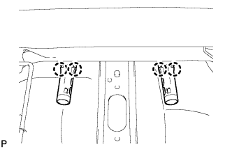 |
Освободите 4 захвата и снимите 2 держателя.
| 17. СНИМИТЕ ОБИВКУ СПИНКИ СИДЕНЬЯ ВМЕСТЕ С ПОДУШКОЙ |
| 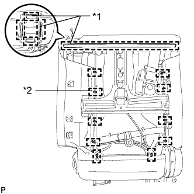 |
Снимите витковые пружины и освободите крепления, а затем снимите обивку спинки сиденья с подушкой.
| *1 | Крюк |
| *2 | Витковая пружина |
| 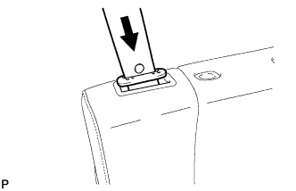 |
Отсоедините ремень безопасности от обивки спинки сиденья с подушкой.
| 18. СНИМИТЕ НАПРАВЛЯЮЩУЮ ПЛЕЧЕВОГО КРЕПЛЕНИЯ РЕМНЯ ЗАДНЕГО СИДЕНЬЯ |
| 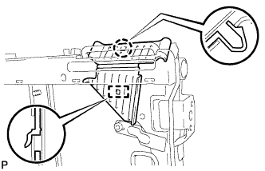 |
Освободите захват и направляющую, а затем снимите направляющую ремня.
| 19. СНИМИТЕ ЛЕВЫЙ 3-ТОЧЕЧНЫЙ РЕМЕНЬ БЕЗОПАСНОСТИ СИДЕНЬЯ № 1 В СБОРЕ |
| 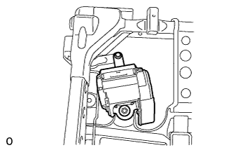 |
Отверните гайку, выверните болт, освободите 2 захвата и снимите ремень безопасности.